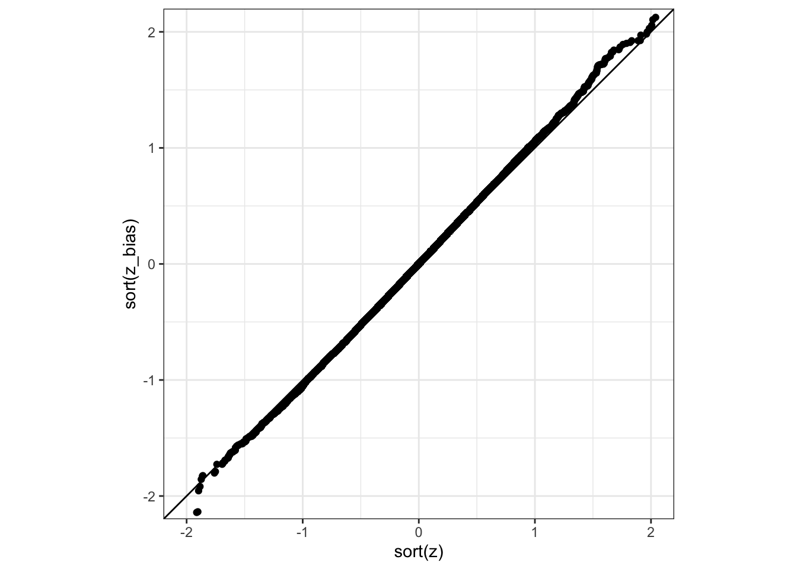

I’ve been teaching a lot lately. That’s no huge surprise. It is my job. Maybe the one slight oddity this year is that I shifted jobs and, in switching hemispheres, I landed 3 consecutive teaching semesters. So. I’ve been teaching a lot lately.
And when you’re in a period of heavy teaching, every-fucking-thing is about teaching.
So this blogpost is about teaching.
Right now, I’m coming to the end of a second year class called Statistical Thinking. It’s been fun to work out how to teach the material. It’s standard fare: sampling variation, tests, bootstraps1, regression, and just a hint of Bayes in the last 2 weeks that you incentivize by promising a bastard of an exam question. So you know, (arms up even though I’m Catholic) tradition!
If I were a rich man (Katrina Lenk with a violin)
The thing about teaching an intro stats class is that it brings screaming to mind that quote from Bennett’s The History Boys2: (paraphrasing) “How do I define [intro to Statistics]? It’s just one fucking thing after another”.
Constructing twelve moderately sequential weeks from the whole mass of things that someone being introduced to statistics needs to know is not unlike being thrown in the middle of the lake with nothing but an ice-cream container and a desiccated whale penis: confusing, difficult, and rather damp.
The nice thing about building an intro stats course is you’re not alone. You’re adrift in a sea of shit ideas! (Also a lot of good ones3, but don’t ruin my flow!)
The trouble is that this sort of course is simultaneously teaching big concepts and complex details. And while it’s not toooooo hard to make the concepts build and reinforce as time inexorably marches on, the techniques and details needed to illuminate the big concepts are not quite as linear.
There are two routes through this conundrum: incantations inscribed onto books made of human skin using the blood of sacrificial virgins (aka gathered during engineering statistics service teaching) or computers.
I went with computers because we are in lockdown and I couldn’t be bothered sourcing and bleeding virgins.
The downside is that you need the students to have a grip on R programming (and programmatic thinking). This only happens if the degree you are teaching in is built in such a way that these skills have already been taught. Otherwise you need to teach both (which is very possible, but you need to teach less statistical content).
This is not a postmortem on my teaching, but if it were, it would be about that last point.
This is a very long way to say I saw a tweet an had feelings.
Because I’m thinking about this stuff pretty hard right now, I am (as Hedwig would say) fully dilated.
And my question is what is the use of teaching this distinction? Should anyone bother dividing by \((n-1)\) instead of \(n\) in their variance estimates?
Well I guess the first question is is there a difference in this distinction? Let’s do the sort of R experiment I want my students to do!
# Independent samples for a qq-plot!# Thanks to Rob Trangucci for catching this!library(tidyverse)n_sim <-100000n <-10experiments <-tibble(exp =rep(1:n_sim, each = n),sample =rnorm(n * n_sim),sample2 =rnorm(n * n_sim))compare <- experiments %>%group_by(exp) %>%summarise(m =mean(sample),m2 =mean(sample2),var_bias =mean((sample - m)^2),z_bias = m /sqrt(mean(var_bias)),z = m2 /sd(sample2))compare %>%ggplot(aes(sort(z), sort(z_bias))) +geom_point() +geom_abline(slope =1, intercept =0) +theme_bw() +coord_fixed(xlim =c(-2,2), y =c(-2,2))

Well that is clear. There is not.
Or, well, there is a small difference.
But to see it, you need a lot of samples! Why? Well the easy answer is maths.
For one thing, when \(n=10\), \[
\frac{1}{n} - \frac{1}{n-1} = \frac{1}{90} = 0.01.
\] This does not compare well against the sampling variance, which (assuming \(\sigma^2\approx 1\), which is usual if you’ve scaled your problem correctly) is about \(0.3\).
But we could choose to do it properly. The bias in the MLE (aka the divide by \(n\)) variance estimate is \[
-\frac{\sigma^2}{n}.
\] This is a lot smaller than the sampling variability of the estimate (aka how much uncertainty you have because of the finite sample), which is \[
\frac{\sigma}{\sqrt{n}}.
\]
And that’s the whole story. Dividing by \(n\) instead of \((n-1)\) leaves you with a slightly biased estimate. But the bias if fucking tiny. It is possibly moving your second decimal place by about 1 number (assume our population variance is one). The sampling variably is moving the first decimal place by several digits.
Truly. What is the point. The old guys4 who went wild about bias are now mostly dead. Or they’ve changed their minds (which is, you know, a reasonable thing to do as information about best practice is updated). The war against bias was lost before your undergraduates were born.
Even in crisis, I maintain
But nevertheless, this whole DIVIDE BY N-1 OR THE BIAS MONSTER IS GONNA GET YA bullshit continues.
And to some extent, maybe I shouldn’t care. I definitely shouldn’t care this many words about it.
But I do. And I do for a couple of reasons.
Reason One: What is the point teaching students about uncertainty and that you can’t just say “this number is different” because the estimate on a single sample is different. If I am to say that I need things to be at least5\(\mathcal{O}(n^{-1/2})\) apart before I’m willing to say they are maybe different, then why am I harping on about the much smaller difference?
Reason Two: It’s a shitty example. Bias and bias corrections have a role to play in statistics6. But if this is your first introduction to bias correction, you are going to teach either:
Bias is always bad, regardless of context / sampling variance / etc
Bias can be corrected, but it’s trivial and small.
Both of those things are bullshit. Just teach them how to bootstrap and teach the damn thing properly. You do not have to go very far to show bias actually making a difference!
Maybe the only place the difference will be noticed is if you compare against the in-build var or sd functions. This is not the use case I would build my class around, but it is a thing you would need to be aware of.
The worlds is a question, this room is an answer. And the answer is no.
If you are going to teach statistics as more than just stale incantations and over-done fear-mongering, you need to construct the types of stakes that are simply not present in the \(n\) vs \(n-1\) bullshit.
It is present when you are teaching the normal vs t distribution. You are teaching that the design of your experiment changes the possible extreme behaviour and sometimes it can change a lot.
The \(n\) vs \((n-1)\) denominator for a variance estimator is a curiosity. It is the source of thrilling7 exercises or exam questions. But it is not interesting.
It could maybe set up the idea that MLEs are not unbiased. But even then, the useless correction term is not needed. Just let it be slightly biased and move on with your life.
Because if that is the biggest bias in your analysis, you are truly blessed.
In real life, bias is the price you pay for being good at statistics. And like any market, if you pay too much you’re maybe not that good. But if you pay nothing at all, you don’t get to play.
Footnotes
To paraphrase Jimmy Somerville, tell me whyyyyyyyyy about 90% of the bootstrap material on the web is … misguided. And why tidymodels only has the shit bootstrap in it?↩︎
Ok. Straight up, “[Intro to statistics] is a commentary on the various and continuing incapabilities of men” would’ve also worked.↩︎
This course stands on the shoulders of giants: Di Cook and Catherine Forbes gave me a great base. And of course every single textbook (shout out to the OpenIntro crew!), blog post, weird subsection of some other book, paper from 1987 on some weird bootstrap, etc that I have used to make a course!↩︎